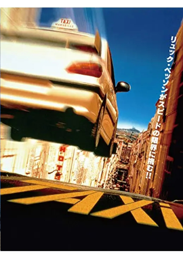
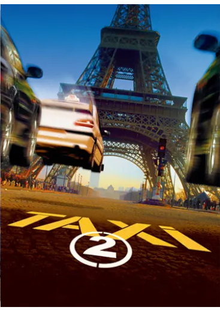
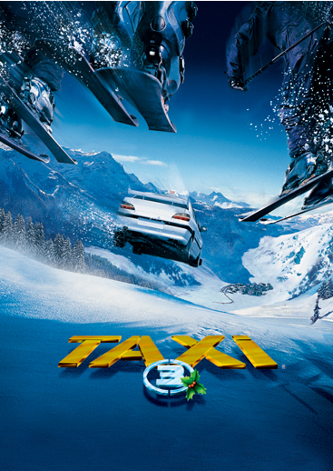
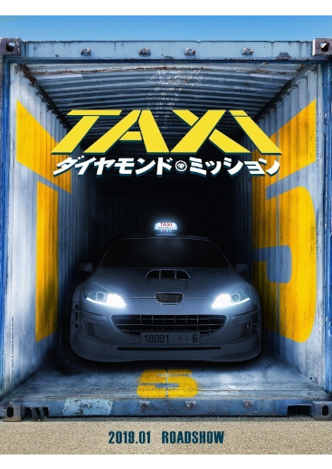

TAXi
改造プジョー406が街中を時速250kmで疾走！
リュック・ベッソンが放つ、史上最速ノンブレーキ・カーアクション！
フランスのマルセイユで無免許かつスピード狂のピザ配達員のダニエルは書類を偽装し、念願だったタクシー運転手への転職を果たす。
愛車のプジョー・406の改造車は、ボタン一つでレーシングカーのごとき姿に変形し、どんな場所でもあっという間に客を送り届けることができる。しかし、客として掲示のエミリアンを乗せた際、いつもの猛スピードで届けたため、スピード違反で検挙されてしまう。
ダニエルは違反取り消しを条件に、協力することとは...
PV
作品情報
|

|
英題(原題) | TAXi |
|---|---|---|
| 公開日 | 1998年08月15日日本公開 | |
| 本編尺 | 86分 | |
| 興行収入 | 2億1000万円 | |
| 監督 | ジェラール・ピレス | |
| 脚本 | リュック・ベッソン | |
| メインキャスト | サミー・ナセリ | |
| フレデリック・ディーファンタル | ||
| ベルナール・ファルシー | ||
| エマ・シェーベルイ |
TAXi②
Ｌ・ベッソン製作の人気カーアクションシリーズ第２弾。訪仏した日本の防衛庁長官が誘拐され……。
史上最速を誇るタクシー運転手ダニエルは、犯人を追ってパリの街を爆走！
サミットのため訪仏した日本の防衛庁長官が、マルセイユ警察のマフィア対策を視察しに訪れた。しかし滞在中、長官とエミリアンの恋人のペトラが、カタノ率いる三菱・ランサーエボリューションVIに乗った日本のヤクザに誘拐されてしまう。 首謀者である北日本の大親分ユキ・ツモトは、日本とフランスで調印される予定の条約に反対し、調印式妨害と日仏の国交断絶を画策。催眠術のプロを2人送り込み、長官をマインドコントロールし、大統領ジャック・シラクを含むフランス政府要人を殺害させようとしていた。 エミリアンは、友人のスピード狂なタクシードライバー・ダニエル、長官のSPとして派遣された諜報部員ユリと共に、ダニエルの彼女リリーの父親でもあるフランス陸軍幹部のベルティノー将軍の協力を得て、拉致された2人の救出にパリへと向かうのであった。
PV
作品情報
|

|
英題(原題) | TAXi2 |
|---|---|---|
| 公開日 | 2000年08月12日日本公開 | |
| 本編尺 | 88分 | |
| 興行収入 | 13億8000万円 | |
| 監督 | ジェラール・クラヴジック | |
| 脚本 | リュック・ベッソン | |
| メインキャスト | サミー・ナセリ | |
| フレデリック・ディーファンタル | ||
| ベルナール・ファルシー | ||
| エマ・シェーベルイ |
TAXi③
プジョー４０６を駆る最速のタクシー運転手ダニエルが、今度は謎の強盗団を追ってアルプスの雪山を爆走する！ Ｌ・ベッソン製作・脚本のコミカルカーアクション第３弾。
時速300キロオーバーのカーチェイスが展開するハイスピードアクションの人気作第3弾。最速のタクシー運転手ダニエルとダメ刑事エミリアンの迷コンビがまたまた登場、今度は謎の強盗一味と対決する。それぞれ恋人に振り回されていた2人が、なんと同時にパパになるなど、シリーズファンには驚きの展開も楽しい。アバンタイトルでは、S・スタローンが007ばりのスパイ役でカメオ出演。ハイウエーでは飽き足らず、アルプスの雪山を爆走する改造プジョー406の活躍も痛快なエンターテインメント作となった。
PV
作品情報
|

|
英題(原題) | TAXi③ |
|---|---|---|
| 公開日 | 2003年05月17日日本公開 | |
| 本編尺 | 87分 | |
| 興行収入 | 8億5000万円 | |
| 監督 | ジェラール・クラヴジック | |
| 脚本 | リュック・ベッソン | |
| メインキャスト | サミー・ナセリ | |
| フレデリック・ディーファンタル | ||
| ベルナール・ファルシー | ||
| エマ・シェーベルイ |
TAXiダイヤモンドミッション(TAXi5)
300km/h超え！超速タクシー再始動！！
スピード狂の警官・マロはパリ警察検挙率No.1を誇りながらも、問題の多さが原因でマルセイユに左遷されてしまう。赴任先のマルセイユ警察は、スーパーカーや最新装備を駆使したイタリアの宝石強盗団に頭を悩ませていた。マロは彼らに対抗すべく、時速300kmを叩き出す伝説のタクシー、プジョー・407を入手するためダニエルの甥で間抜けなタクシー運転手・エディと組むことになる。
PV
作品情報
|

|
英題(原題) | TAXiダイヤモンド・ミッション(TAXi5) |
|---|---|---|
| 公開日 | 2019年01月18日日本公開 | |
| 本編尺 | 103分 | |
| 興行収入 | 1億7887万円 | |
| 監督 | フランク・ガスタンビドゥ | |
| 脚本 | リュック・ベッソン/フランク・ガスタンビドゥ | |
| メインキャスト | フランク・ガスタンビドゥ | |
| マリク・ベンタルハ | ||
| ムッシュ・プルべ | ||
| ベルナール・ファルシー |